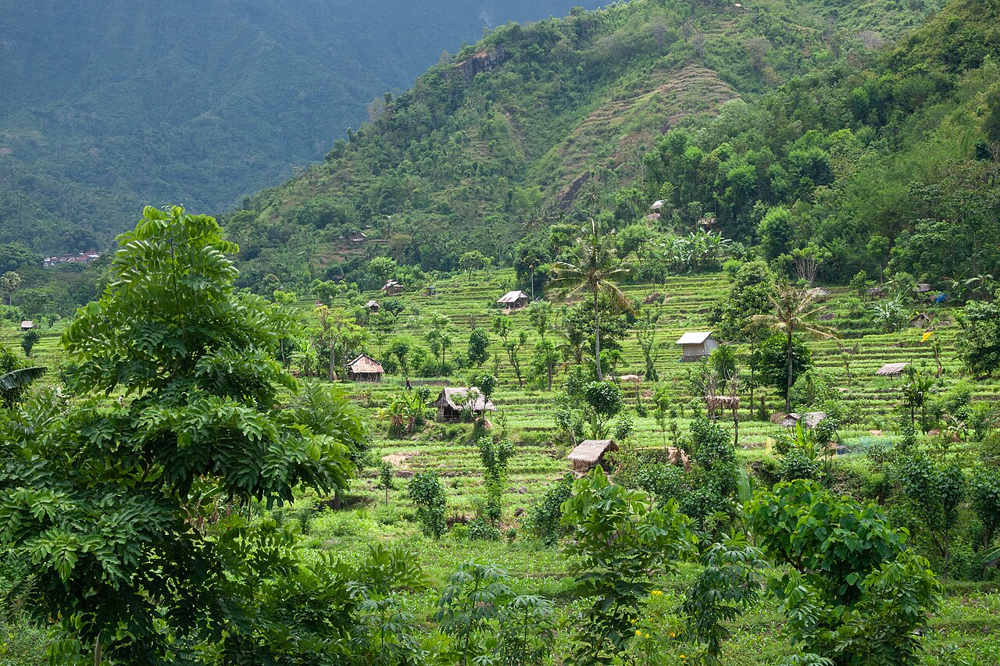
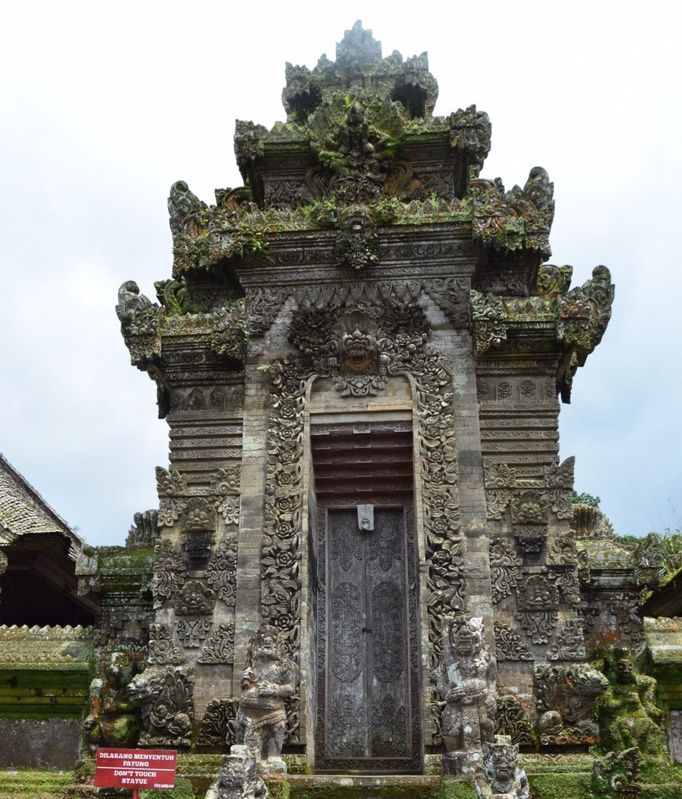

Sudut-sudut desa
Foto ilustrasi dari tempat serupa. Pilih kategori, ketuk foto untuk memperbesar, lalu pakai tombol panah di papan ketik untuk pindah foto.
Cerita di balik foto

Air yang datang dari hutan
Hutan di atas desa tidak boleh ditebang. Dari sanalah air mengalir melalui terowongan kecil ke sawah paling atas, lalu turun petak demi petak. Giliran air disepakati bersama dalam rapat subak setiap bulan.

Pura di sudut desa
Pura ini dipakai warga untuk upacara. Tamu boleh melihat dari luar, dan bisa masuk ke halaman jika memakai kain dan didampingi pemandu. Saat ada upacara, pengelola akan memberi tahu lebih awal.
Tempat dan jam terbaik memotret
Saran dari pemandu desa berdasarkan arah cahaya.
| Tempat | Jam terbaik | Yang bisa didapat |
|---|---|---|
| Bukit timur | 05.45 sampai 06.30 | Kabut tipis di atas terasering |
| Jalan utama desa | 07.00 sampai 08.00 | Rumah adat tanpa keramaian |
| Sawah Subak Tengah | 08.00 sampai 09.30 | Petani bekerja dan pantulan air |
| Sanggar tari | 16.00 sampai 17.00 | Cahaya sore di antara pepohonan |
| Lembah barat | 17.15 sampai 18.00 | Matahari terbenam di balik bukit |
Saat memotret warga
Minta izin dulu
Sapa dan tunjukkan kamera Anda. Hampir semua warga senang, asal ditanya lebih dulu.
Jangan terbangkan drone sembarangan
Drone harus izin pengelola dan tidak boleh dipakai di atas pura atau upacara.
Tetap di pematang
Jangan menginjak bibit muda demi mencari sudut foto.
Warna desa sepanjang tahun
Pilih bulan sesuai warna yang ingin Anda abadikan.
- Desember sampai FebruariSawah bercermin dan langit dramatisPerak
- Maret sampai AprilPadi muda dan udara segarHijau muda
- Mei sampai JuniPadi menguning dan musim panenEmas
- Juli sampai NovemberLangit biru dan sawah beraBiru dan cokelat
Ingin melihat langsung?
Foto terbaik datang dari waktu yang cukup. Coba pesan menginap semalam.